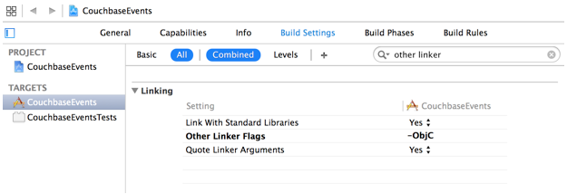
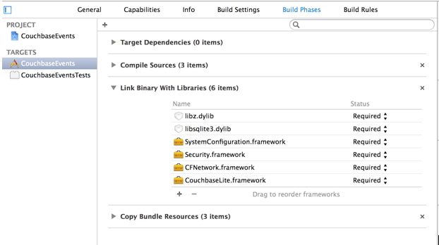

This lesson teaches you to
Creating a new project
When you begin writing a new app you need to incorporate Couchbase Lite into your project. This lesson shows you how to add Couchbase Lite and its other dependencies to a new xcode project.
Create a new project
The following steps set up a new project with the file names used in this tutorial.
-
Open Xcode and select File > New > Project.
-
In the new project template sheet, click Single View Application and then click Next.
-
In the new project options sheet, enter values for each field and then click Next. In this example, we will be using the sample app "CouchbaseEvents" to illustrate how to create a new iOS project and add Couchbase Lite to the project.
Here are the values used in the sample app:
- Product Name—CouchbaseEvents
- Organization Name—Couchbase Training
- Organization Identifier—com.couchbase.training
- Devices—Universal
- Use Core Data—no
-
Select a location for your new project, and then click Create.
Add the Couchbase Lite framework
The framework provides the interfaces for writing apps with Couchbase Lite.
-
Download the latest release of Couchbase Lite for iOS and move the unzipped Couchbase Lite folder to a permanent location.
-
Open the Couchbase Lite folder and drag the CouchbaseLite.framework folder to the Frameworks group in the Xcode project navigator.

-
In the Choose options for adding these files sheet, make sure that your app target is selected.
Add dependencies
Couchbase Lite requires additional frameworks and libraries for building an app. These additional dependencies are added via Xcode build settings.
-
In the navigator, click on the CouchbaseEvents project file to open the project editor for your app, and then click the Build Settings tab.
-
Scroll to the Linking section, find the Other Linker Flags row and then add the flag
-ObjC(be sure to use the capitalization shown).The Other Linker Flags row should look similar to the following screenshot:
 Click the Build Phases tab.
- Expand the Link Binary With Libraries section and add the
following items:
CFNetwork.frameworkSecurity.frameworkSystemConfiguration.frameworklibsqlite3.dyliblibz.dylib
Click the + at the bottom of the section to add each item. When you are done, your screen should look similar to the following screenshot:
